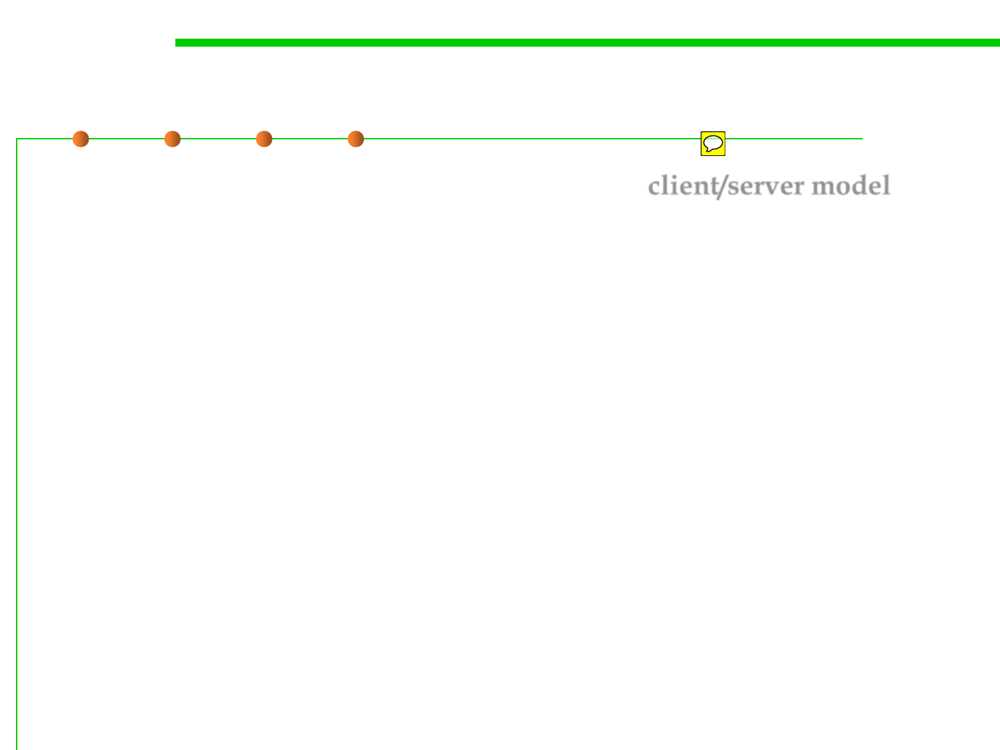

1.1 Multi-Dimensional Views of Software Construction
Distributed Programs
▪ For example, a software system might use the client/server model,
with a single server program running on one computer and a large
number of client programs running on many other computers.
▪ In this scenario, the build system could create two release packages,
given that different people will be installing the server program
versus the client program.
▪ Alternatively, the same release package could be used to install the
two separate programs.